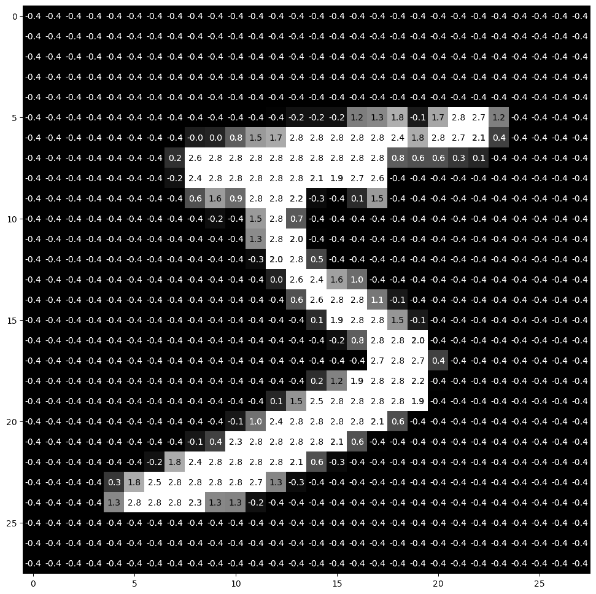
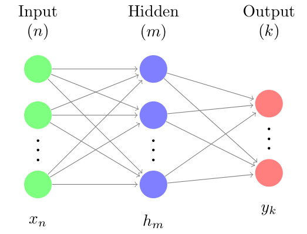
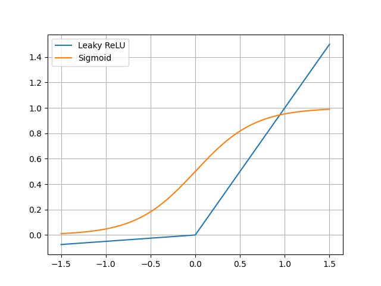
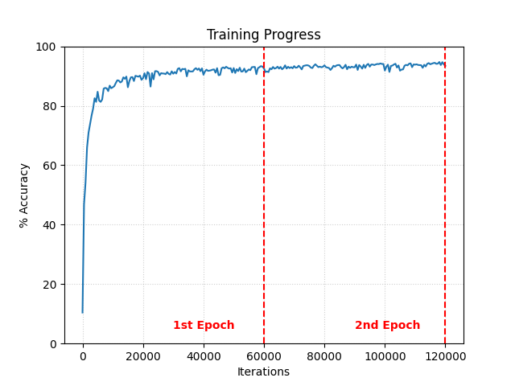

Neural Network
Intro

The goal of this project was to create a neural network trained to recognize handwritten characters from the MNIST dataset. By building the network from the ground up, I aimed to gain a fundamental understanding of backpropagation, gradient descent, and the matrix operations that drive modern machine learning.
Architecture

The network operates through layers of nodes interconnected by synapses, each defined by learnable weight and bias parameters. I developed a Multi-Layer Perceptron from scratch, where the activations for each layer are derived from the preceding layer's output through a tunable linear transformation and a fixed non-linear activation function.
To train the model, I implemented a mean squared error cost function and utilized backpropagation to calculate the gradient of the cost with respect to every weight and bias in the system. I then optimized these parameters using a custom multithreaded batch gradient descent algorithm; allowing for efficient distribution of the computational load during the training process.
Activation Functions

Choosing the right non-linearity was key to performance. I initially used a sigmoid activation function, but found that it was slow to compute and suffered from the vanishing gradient problem, slowing down the early stages of training. After switching to a Rectified Linear Unit (ReLU) for the hidden layers, the network converged significantly faster and achieved a higher peak accuracy.
Results

The final neural network achieved ~94% accuracy on the handwritten digit test set. By tuning hyperparameters like the learning rate and batch size, I successfully minimized overfitting and stabilized convergence. This project demonstrated the efficacy of neural networks and gradient descent in optimizing high-dimensional parameter spaces for complex pattern recognition.